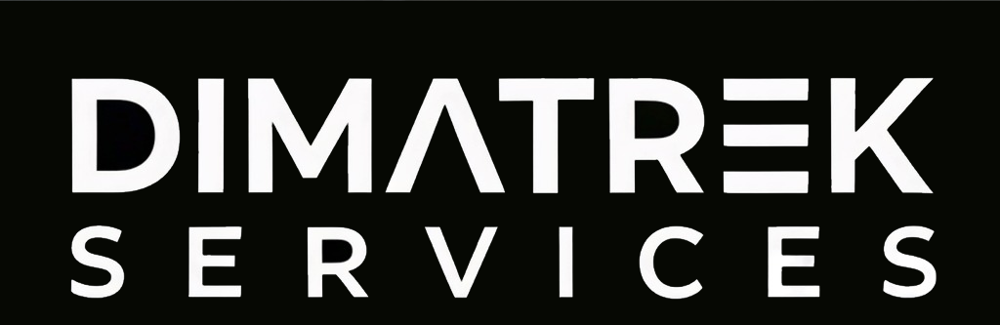

Dimatrek Services / AFTERLIGHT
Business Model Canvas
UNIVERSO LUMEN · PROYECTO UNIVERSITARIO
Un mundo sin humanos.
Una historia con propósito.
El modelo detrás de AFTERLIGHT: una aventura de exploración, puzzles e identidad sintética, conectada a un ecosistema web y móvil.
08semanas de desarrollo
3Daventura isométrica
PC + Webplataformas previstas
Contenido del GDD Por definir en el documento
0 de 9 bloques explorados